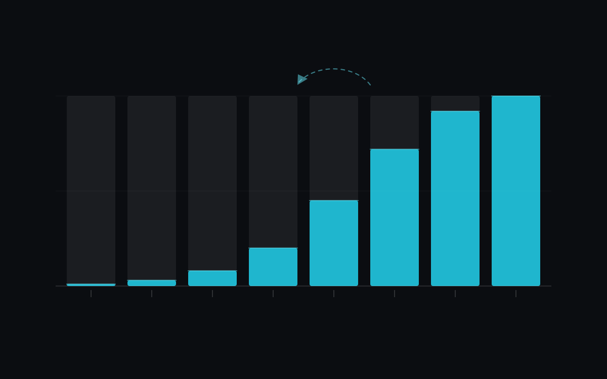

Writing the new system is the part of a legacy migration you can estimate. The cutover, moving real traffic and real people onto it without breaking the business, is where migrations fail, and it's usually the part that gets planned last.
I've run two migrations that had little in common, and both taught me the same thing.
Two very different migrations
At Buscaônibus / Travelier, a high-traffic travel search platform handling millions of daily searches across hundreds of bus operators, the problem was the runtime. The platform ran on Python 2.7 and Django 1.9 on App Engine. I led the move to Python 3.10 and Django 5 on Cloud Run, in stages, with new complex APIs built in FastAPI and some microservices as Flask Cloud Functions. Comparing the mean before and after, average API latency dropped 25% and cloud cost dropped 40%.
At Portobello, a ceramics manufacturer and retailer with around 4,000 employees, the problem was integration. I was part of the team that delivered the company's 2021 digital transformation, including the move of CRM and ERP to Salesforce across 124 retail stores, most of them franchises. Before the migration I administered the Microsoft SQL Server database that held company-wide data and integrated several ERPs and CRMs into it. For the rollout I designed the product data model and the connection between products and orders.
Users never noticed the first migration. The second was an organisational change in which the software was the easier half. Both depended on how carefully the rollout was planned before anyone wrote code.
Before you touch the code
Find out what calls it
The documentation tells you what is supposed to call the old system. The logs tell you what does. A system that has been running for years always has a consumer nobody remembers: a scheduled job, a partner integration, an internal dashboard, a script on someone's laptop. Instrument the old system and log every caller for long enough to catch the monthly ones.
Find the real contract
The contract is the observable behaviour consumers depend on, bugs included, and the API spec
only covers part of it. If an endpoint returns 200 with an empty body where it
should return 404, something downstream almost certainly relies on that. Decide
for each quirk whether you'll preserve it or fix it. A fix is a breaking change and needs its
own communication plan.
Measure a baseline
Measure the old system before you replace it: latency percentiles, error rate, throughput, infrastructure cost. Use percentiles, because an average hides the tail that users complain about.
Without a baseline you can't prove the migration worked. You also can't tell whether a complaint two months later is a real regression or something that was always broken. Without numbers from before, "it feels slower" can't be checked.
Migrate in slices
A big-bang cutover is tempting because it's simple to explain and you stop maintaining two systems sooner. It's also how you discover every wrong assumption at once, at night, with the business offline.
The alternative is the strangler pattern. In practice:
- Put a routing layer in front of the old system, so you can direct traffic per endpoint instead of all at once.
- Reimplement one endpoint in the new system. I'd pick the highest-traffic read endpoint with the simplest contract, so you get real load early and can still reason about correctness.
- Shadow it: send production traffic to both systems, serve the old response, and compare. That's how you find the differences no test suite predicted, before any user sees them.
- Move a small percentage of live traffic over. Watch. Increase.
- Repeat, keeping both systems alive until the last consumer has moved.
Running two systems in parallel is annoying. It's what you pay to avoid betting the business on a single evening.
Write the rollback criteria first
I'd defend this step hardest, because it's the cheapest and the most often skipped.
Before you deploy, write down what would make you roll back, in numbers: error rate above x for y minutes, p95 latency above z, any data-integrity mismatch at all. Write down who can make that call, and make sure that person won't need to find anyone else at 3am to do it.
Before deployment is the only time you'll set those thresholds calmly. Once traffic is on the new system and a graph moves the wrong way, everyone in the room wants to read it optimistically, because you've all been working on this for months. Committing in advance takes the judgement call away from the worst possible moment to make it.
A rollback plan written during an incident turns into a negotiation between tired people who want the migration to have worked.
The organisational half
The Portobello rollout taught me this. Technically it was integration work: ETLs between ERPs and CRMs, the product data model, microservices. It produced no integration-related incident tickets, only usage questions. Whether it succeeded, though, depended on whether people used Salesforce afterwards, and engineering doesn't control that.
The most useful thing I built there was arguably the regional fiscal discount simulator, a Python/Django service that calculates the full tax burden of a list of products and shows the result inside Salesforce through an Apex API layer and a button. Working with the fiscal stakeholders, we raised its coverage of fiscal rules from 70% to 96%. It gave the commercial team their own reason to work in the new system, where otherwise they'd only have had an order to.
The same applies to any migration where people change how they work:
- Migrate the group that benefits most first. You want your earliest reference to be someone who is happier afterwards.
- Give people a reason to move. A feature that only exists in the new system works better than a deadline email.
- Budget for support explicitly. The weeks after cutover need staffed attention, and if you haven't planned for it, it comes out of the migration team's evenings.
- Leave the old system on longer than feels necessary. Keeping it read-only for another quarter costs far less than being wrong about who still needed it.
A checklist
If I were starting one of these, this is what I'd want on the wall before any code is written:
| Question | Answered before you start? |
|---|---|
| Every real consumer of the old system, from logs | Yes |
| Behaviour to preserve vs. bugs to fix, decided per quirk | Yes |
| Baseline: p50/p95/p99, error rate, cost | Yes |
| Rollback thresholds, numeric | Yes |
| Who can call the rollback, alone | Yes |
| Order of slices, highest traffic first | Yes |
| Date the old system goes read-only | Later, on purpose |
A migration that goes well is boring. Nobody outside the team notices it happened, the graphs move the right way, and there's no story to tell afterwards.